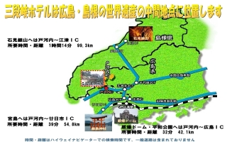
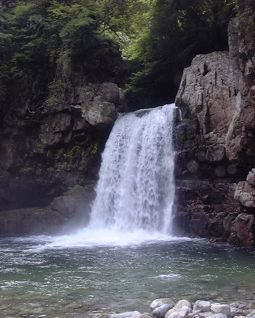
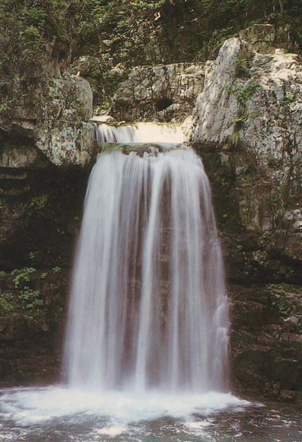
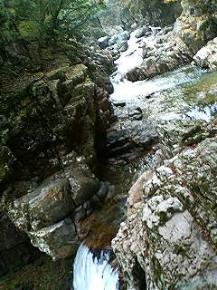
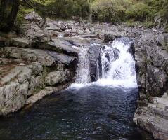
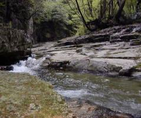
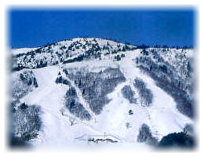
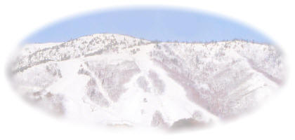

| ■ 戸河内ＩＣから当館へのアクセス方法 （ |
| アクセス方法 |
| ■ 戸河内ＩＣから当館へのアクセス方法 （ |
| 広島駅よりバスセンター(紙屋町)まで市内電車がおすすめです | |
| 自動車 | 中国自動車道戸河内インターで下りそのまま直進 国道１９１号を戸河内町方面に北上 約７キロ地点落合（赤）橋を左折し８００ｍほど進んだ突き当たりです 戸河内インターより１０分 ８㎞ 駐車場：乗用車３０台、又はバス６台まで収容可 |
| バス | 高速経由バスでは所要時間１時間１５分！！ 広島バスセンターより三段峡行きバスを利用（所要時間：２時間１５分） 終点三段峡バス停より徒歩５０ｍ |
| バス時刻表(2010.09.20改正) |
|||||||||||||||||||||||||||||||||||||||||||||||||||||||||||||||||||||||||||||||||||||||||||||||||||||||||||||||||||||||||||||||||||||||||||||||||||||||||||||||||||||||||||||||||||||||||||||||||||
|
|
||||||
| ■ 当ホテルと世界遺産の位置関係（広域図） | ||||||
|  大きな地図で見る 世界遺産へのアクセス方法・時間 （ドライブナビゲーター参考の為、利用される道路や交通状況により所要時間は変わります）
|
||||||
|
|
| ■西中国山地国定公園 特別名勝 三段峡 三段峡は全長１６キロにも及ぶ柴木川（太田川上流）の雄大な断崖や瀑布などの連続する日本に五つしかない特別名勝の渓谷です。 春は、2000種の草木の新緑美 夏は、渓谷と原生林から吹き出る天然ｸｰﾗｰ 秋は、色彩られる紅葉 冬は、入り口から見える水墨画の世界 【三段峡の楽しみかた】 三段峡の魅力はなんと言っても渓谷美です。中でも三段峡正面口から黒淵を通り猿飛、二段滝へとつづく渓谷沿いの遊歩道をゆっくり渓谷美を見ながらの散策は、心を癒してくれます。 中でも入口から黒淵までの3キロに及ぶ散歩道は景勝地では味わえない三段峡の魅力です。この３キロは、滝、淵、断崖、大小の岩岩、原生林の森が柴木川に沿って連続的に様々な景観となって次々と展開しています。 往復２０分ｺｰｽ ゆっくり歩いて入口←→竜の口 往復１時間ｺｰｽ ゆっくり歩いて入口←→石樋 往復２時間ｺｰｽ ゆっくり歩いて入口←→黒淵 楽な一日ｺｰｽ 入口→定期バスで出合→歩いて猿飛二段滝、 三段滝→出合から定期バス→入口 １日ｺｰｽ 歩いて入口→竜の口→石樋→黒淵→ 猿飛二段滝→三段滝→出合から定期バス→入口 （健脚） ←（あるいは歩いて入口まで） 中国地方の木の種類のすべてが見られる秘境。ｵｵﾙﾘをはじめ多種類の鳥、まばゆいばかりの新緑、厳しい冷え込みのため彩られる美しい紅葉。これらに接することで、都会のストレスはすっかり忘れてしまうでしょう。 |
|
 |
長淵（ながぶち） 三段峡ガイド物語は、ここ三段峡正面口、長淵から始まる。 |
 |
からすばち
長淵をしばらく行くと遊歩道のすぐ上に千坪ほどの平地があり、昔寺が建っていたところだと「寺原」と呼ばれている。その前の河を寺が瀬といい、淵を烏淵、そこには「からすばち」という名のポットホールがあり、大人一人がすっぽりと入る大きさである。すぐ上流には蝙蝠岩がある。 |
 |
姉妹滝（しまいだき） 当館（三段峡正面口）より、長淵橋を渡って峡谷の中に入り５分ほど歩くと、三段峡内最初の滝が現れる。姉妹滝である。姉妹滝は龍の口と景観が一体となっており、通常は３人姉妹だが、雨の強く降る日は２人になったり、豪雨の時は一人になったりと、ころころと姿を変える。湧き水で通常は一定であるが雨の日には上流では川となっている。 |
 |
竜（龍）の口（たつのくち）
三段峡正面口より、長淵橋を渡って峡谷の中に入り５分ほど歩くと、渓流はしだいに激しくなり対岸の岸壁が迫ってわずか６メートルの川幅。 激流により岩盤が蛇行しながら浸食され、その姿がまるど龍のごとし、又中央に舞う水しぶきはまさに龍が噴煙をあげているかに見える。 |
 |
栂崎（つがさき） 龍の口をすぎると川幅は広なり瀬の音も静かになる、ここが栂崎である。 |
 |
五立（ごだち） 三段峡正面口より、１０分ほど歩くと、山中に数百メートルにおよぶ五つの岸峰を望み見ることができる。なかには逆立ちしているような奇岩もある。五立の一つの絶壁から湧き水があり、それが赤滝にながれ落ちている。五立のうち最大なものは「庄兵衛岩」である。 |
赤滝（あかだき）
五立の絶壁の中から湧き水がつくる、煉瓦を積み上げたような滝、赤滝。滝の岩肌が赤いのはタンスイベニマダラという藻の一種が岩に繁茂したためで、これほど赤みをおびたものは三段峡でも珍しい。この水も超軟水で飲むと美味しい。ただし雨の後３日間は上流の雨水の混ざりものがあるので飲まない方がいいと専門家の意見。しかし我々は歩くたびに飲んでるなー。 |
 |
庄兵衛岩（しょうべいいわ） 赤滝をすぎてしばらく行くと庄兵衛岩の中をくりぬいた洞穴に出会う。決して青の同門ではありません。このトンネルを囲むように木の橋がかけられていたが、洪水の度流されるので昭和３０年代に近代の技術で掘られた。 |
 |
女夫淵（みようとぶち） 三段峡正面口より、２０分ほど歩くと、大小二つの寄り添う淵に出会う、これが女夫淵である。 |
 |
石樋（いしどい）
当館より、峡谷を25分ほど歩くと、両岸が岩層によってでき、奔流が流紋岩、花崗斑岩の岩礁を深く浸食して樋の形を造るったところから石の樋、石樋と呼ばれる。河床が２００ｍにわたり、二千坪にも余る大岩盤、見上げれば塔岩、天狗ｹ岳、鯖のあたまが一望できる。 |
 |
モリアオガエル
石樋の小池は、以前は今の倍の大きさであったが昭和６３年の大水害により、道が流され工事改修により道をまっすぐつけたため池が小さくなった。モリアオガエルは木に生涯最後の花を咲かせ、親は池底に沈み新しい命自然の厳しさを見せてくれる。動植物については別のコーナーを設けます。 |
 |
石樋地蔵（いしどいじぞう） 峡内を歩くと、お地蔵さんによく出会うが、石樋の中には自然の岩のお地蔵さんを見ることができる。 |
 |
塔岩（とういわ） 石樋の突き当たりを関附といい、関附の正面に円錐形の塔のような岩を塔岩、とういわとは言いにくいのでといわと呼んでいる。一見後ろの岩とくっついているように見えるが独立した岩である。これを上るのは後ろに廻って岩をよじ登る。昔はマッタケが生えていたが近年見たことがない。関附はぐるっと回っていてこの下をぐるの瀬という。石樋から親子岩まで見通す事ができ展望がとても美しい。 |
 |
黒淵（くろぶち）
当館より、峡谷を４５分ほど歩いたところに一大断崖に突き当たる、峡谷随一の景観である黒淵がある。この淵は以前、水深が１０ｍ以上あり、水底がまっ黒く見えていたことから、このような名称で呼ばれている。中国の赤壁に比し断崖絶壁の連続で松の木々の間には岩松、セッコク、蘭の花が咲き紺碧の静淵にそれらの影を映し、風光明媚とはこのことか。 |
 |
黒淵荘（くろぶちそう）
黒淵で渡船（片道３００円往復５００円）に乗り絶壁を見上げながら約５分で黒淵荘に到着する。 |
 |
猿飛（さるとび）
三段峡正面口からだと２時間半、水梨口からだと３５分歩くと秘境のなかの秘境、猿飛につく。 |
|  | 二段滝（にだんだき） 猿がこの断崖を飛び越えたというところから名付けられた猿飛をすすむと、ゴーという滝の音が聞こえる。二段滝である。 音から別名「百々瀧」とも、裏から滝を見ることができるので「裏見瀧」とも呼ばれ、周りはすっぽりと大きな井戸を掘ったような穴の中である。大自然の傑作、別世界である。 下から見ると大きな一段の滝である。滝の正面から高いところに上がれば二段に見えるところから二段滝と呼ばれている。 ところが．．．． |
|  | 二段滝（にだんだき） ．二段滝は文字通り二段滝であった。昭和６３年の大水害の時上の一段がなくなり一段滝となった。 このような何万年をかけて起こる自然の浸食作用が我々の生きている時代に見られるのは希有な事である。 一段になっても決して一段滝と呼ばないで下さい。又二段に復旧しようなどとは決して思わないで下さい。 熊南峰、斉藤露翠の時代以前からこの二段滝は、その名前で存在した。 |
|  | 二段滝の上（にだんだきのうえ） ．滝の上部は直角である。水はまっすぐ流れ勢いをつけ岩を乗り越え、岩盤にぶち当たり行き場を失って直角に向きを変えて滝壺に落ちる。その岩が崩壊したため岩に乗り上げず滝壺に落ちる。二段が無くなった。二段滝を上から望むと滝壺に引き込まれそう。落ちると命はない。 初めてここを案内された斉藤露翠（横川の神様と言われた横川小学校の校長）はその時の感動を日誌に残している。 露翠の教え子隠居さん達が氏の意志を受け継いでいる。 |
| ■奥三段（おくさんだん） 二段滝からさらに３０分ほど歩くと、田代出合というところで、林道に合流する。ここをさらに進むと、奥三段の入り口に到達する。奥三段は、ほとんど人手が入っていない、まさに自然そのものが残る秘境である。 ここは、遊歩道が整備されていないので、山歩きの初心者は、案内人を必要とする。上級ハイカー向けといえるが、ぜひ、いつかは一度は訪れたいところである。 |
  |
| ■深入山（しんにゅうざん） 三段峡の東側を、ゆったりと取り囲んでいる女性的な山です。山腹には、蔵座と呼ばれる高原があって、牛の放牧場になっています。夏場はキャンプ、冬場にはスキーヤーたちで賑わいます。 |
 |
|
|
|  | ■恐羅漢（おそらかん）スキー場 西日本では最高の積雪と雪質を誇っています。 シーズンには、県内外から多くのスキーヤーが押し 寄せ、初級から上級まで滑れるゲレンデは人で いっぱい。
|
|  |
| ■ 八幡高原１９１スキー場 | お問合せ：（０８２６）3７－０３４１ | |
| ■ パインリッジリゾート芸北スキー場 | お問合せ：（０８２６）3５－０２５０ | |
| ■ 大佐スキー場 | お問合せ：（０８２６）3５－００３８ | |
| ■ ユートピアサイオト | お問合せ：（０８２６）3５－１１７７ | |
| ■ ホワイトバレー松原 | お問合せ：（０８２６）2９－００４１ | |
| ■ 恐羅漢スノーパーク 旧国設と旧民営は統合され一つのスキー場になりました | お問合せ：（０８２６）２８－７００７ | |
| ■ 瑞穂ハイランド | お問合せ：（０８55）85－11１１ | |
当ページはリンクフリーです。相互リンクして頂ける方も募集しています
| 橡餅ネットショップ | 三段峡名物橡餅をを紹介しているサイト 「運営」・・・三段峡ホテル |
| 安芸太田町観光協会 | 広島県戸河内町を紹介しているサイト 「運営」・・・安芸太田町観光協会 |
| マピオン | 正確な地図をご利用できます 「運営」・・・地図のMapion |
| 自然館 | 鮎の自然館・スキーの自然館 是非見て下さい。 |
| 三段峡の写真家 | 「源流」のカメラマン 広島市でﾌｫﾄｼｮｯﾌﾟ 「運営」・・・光広さん |
| Lakshmiタイ古式マッサージ | ～ゆったり隠れ家サロン～本格的なタイ古式マッサージ広島市 「運営」・・・金井さん新山さん大前さん |
| エルフル温泉探検隊 | 広島県を中心とした近隣各県、周辺地域の温泉情報満載のサイト 「運営」・・・広島県中小企業共済協同組合 |
| 小川鉄工株式会社 | 吉田町で機械加工をやっている，社長も仕事もまじめな会社。ホームページは遊びごころにあふれています。 |
| 株式会社中前 | 戸河内町を中心とする，お祭りや神楽などの現地情報を発信するページ。 |
| モンペの広島県 日帰り温泉リスト |
広島県内の気軽に入浴できる天然温泉を紹介されているサイト 「運営」・・・個人 |
| 童謡・温泉・Ｏｕｔｄｏｏｒ | 温泉めぐり紹介が充実しています。 |
| 可部線文芸賞、写真賞 | 可部線の廃止を憂い駅、電車を題材に文芸作品、写真作品を募集している。 「運営」・・・猪さん |
| 可部線プロジェクト | 可部線全区間の沿線の写真 「運営」・・・MATIAさん |
| 宿ネット 宿の出合いサイト |
全国のホームページを運営している宿！ 「運営」・・・全旅連 |
| INFO BAZAR | 写真とカメラのページ。三段峡の写真集もあり。 「運営」・・・MATIAさん |
| kurasanのhomupage | 戸河内出身７０の手習いで自慢のホームページ。 「運営」・・・田形さん |
{kind=link}